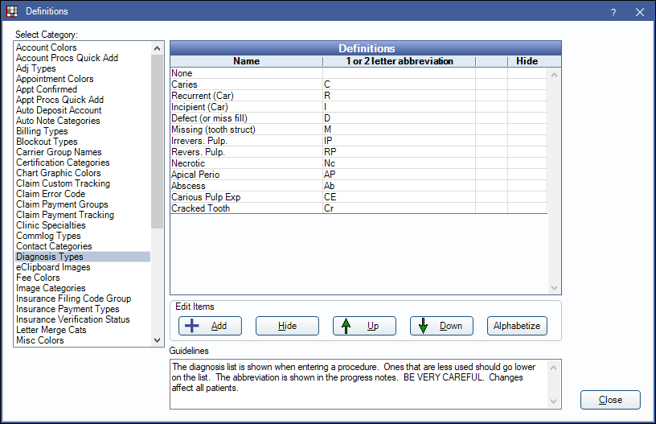
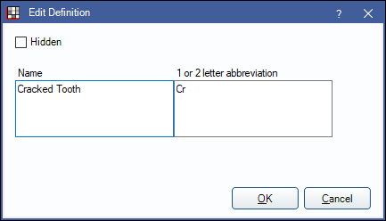

Definitions: Diagnosis Types
In the Main Menu, click Setup, Definitions, Diagnosis Types.
The Diagnosis Type definition determines the list of diagnosis options available when Entering Treatment.
Double-click an existing item or click Add to create a new item. The Edit Definition window will open.
- Name: Enter the diagnosis.
- 1 or 2 letter abbreviation: Enter a short abbreviation for the diagnosis. The abbreviation will show in the Chart Module progress notes.
Click OK to save.